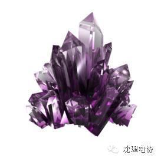

【电协提醒】母亲节

爱子心无尽，归家喜及辰。寒衣针线密，家信墨痕新。
见面怜清瘦，呼儿问苦辛。低徊愧人子，不敢叹风尘。
---【清】蒋士铨
你有多久没给家里打过电话？有多久没有关心家人？明天就是母亲节了，快给在远方的妈妈打个电话吧。不要让地理距离隔开了感情距离。
能否用自己所学的东西给妈妈做个小制作呢？
电协温馨提醒

在辽宁南部平原上，有一座2000多年的古城——鲅鱼圈熊岳城。在熊岳城东那片碧绿如海的果林中，有一座山，孤峰突起。山顶有一青砖古塔，远远望去，宛如一位慈母，眺望远方，盼儿早早归来。这座山就叫望儿山，它有着一个催人泪下的传说。
相传很久以前，熊岳城郊是一片海滩。海边有一户贫苦人家，只有母子二人，相依为命。母亲十分疼爱儿子，一心盼望儿子勤奋读书，将来学业有成。为了供儿子读书，她白天下地耕种，晚上纺纱织布，辛苦劳作。儿子也很听母亲的话，决心苦学成才。母子苦熬了十几年。这年，朝廷举行大考，选拔人才，儿子决定进京赶考。临行前，母亲对儿子说：“孩子，你安心去考吧，考上考不上，都要早早回来，别让娘担心啊！”儿子说：“娘，放心吧，我一定好好地考，一考完就回来，您就等着我的喜讯吧。”
儿子乘海船赴京赶考去了。母亲昼耕夜织，等待儿子归来。但是，一直没有儿子的音讯。母亲着急了，就天天到海边眺望。一年，两年，三年... ...南飞的大雁秋天去了，春天又回了。母亲的头发都花白了，却不见儿子的身影。七年，八年，九年... ...夏天的烈日火辣辣，冬天的寒风呼呼吹，母亲的脸上布满了皱纹，可她每天望见的仍然是烟波浩淼的大海，来去匆匆的船帆。可怜的母亲，一次又一次地对着大海呼唤：“孩子呀，回来吧！娘想你，想你呀......”十年，二十年，三十年... ...年迈的母亲倒下了，化成了一尊石像，也没有盼到儿子归来。原来，他的儿子早在赴京赶考的途中，不幸翻船落海身亡了。上天被伟大的母爱感动了，在母亲伫立盼儿的地方，兀地矗立起一座高山；大地被伟大的母爱感动了，让母亲洒下的泪珠，化作了一股股地下温泉，滋润出无数红艳艳的苹果；乡亲们被伟大的母爱感动了，把那拔地而起的独秀峰叫做“望儿山”，在山顶建了慈母塔，在山下修了慈母馆，好让子孙后代缅怀母亲的平凡而伟大的恩情。
至今，鲅鱼圈人民还保留着敬母爱母的古风。在每年五月“母亲节”这天，都要开展各种敬母爱母活动。不少人还在慈母馆内为自己的母亲立碑铭志，以表达对母亲的崇敬。
康乃馨，是国际上献给母亲的花，它在纤细青翠的花茎上，开着鲜艳美丽的花朵，花瓣紧凑而不易凋落，叶片细长而不易卷曲，花朵雍容富丽，姿态高雅别致。红色的康乃馨象征热情，正义，美好和永不放弃，祝愿母亲健康长寿；粉色的康乃馨，祈祝母亲永远年轻美丽；白色的康乃馨，象征儿女对母亲纯洁的爱和真挚的谢意；黄色花朵象征感恩，感谢母亲的辛勤付出。

水晶，象征纯净无私的母爱，如母爱般坚固并且不离不弃，纯净如母爱，细腻如母爱
1.身在异乡为异客，最深思念是母亲。马上就是母亲节了，身在异乡的我不能亲手为您送上康乃馨，唯有以短信表心意：妈妈，我爱你。
2.你也许曾经许愿，让爱情甜甜蜜蜜；你也许曾经祈愿，让工作顺顺利利；今天，你必须在佛前虔诚的祝愿：祝愿母亲永远健康平安。母爱无涯，回报有恩。
3.岁月燃烧了您的青春，我将您的恩情永远铭记；皱纹爬上了您的额头，我用孝心将它轻轻拂去。人世间最无私的母爱，我要用全心来回报。这个属于妈妈的节日，我摘下云朵，剪下霞光，想念缝合，思恋做线，织一套炫丽夺目的..
4.您常在给我理解的注视，您常说快乐是孩子的礼物。所以今天，我送上一个笑，温暖您的心。
5.一年又一年，风风雨雨，一日又一日，日落日起，母亲的厚爱渗入我的心底，在这节日之际，敬上一杯真挚的酒，祝母亲安康长寿，欢欣无比。
6.我的成长是刻在你额头上的横杠；我的放纵是刻在你眉心的竖杠；我的欢乐是刻在你眼角的鱼尾；我的成功是刻在你唇边的酒窝，妈妈您辛苦了！
7.我要祝福您：亲爱的妈妈;繁忙的家务请别太累;诚挚的感情您最可贵;美好的生活仔细品味;烦心的事儿别去理会;乐观健康您准能活百岁!
8.如果一片树叶代表快乐，我就送你一片森林；如果一滴水代表一个祝福，我就送你大海！别臭美了，这是我送给你妈妈的，母亲节快要到了，在这里，我想祝她越来越年轻，越来越漂亮，一生都健康！
9.辛劳一辈子的您虽已银发如雪，可您在我心目中仍是那么的青春靓丽!妈，祝您永远年轻快乐!!!
10.妈妈说她就像大海中的一粒沙，但我觉得妈妈的爱就像大海,愿妈妈人也像海一样永远年轻
11.我的妈妈更多的时间更像我的一个知心朋友，感觉好贴心好幸福。希望妈妈身体健康，快快乐乐的。
12.母亲节来了，妈妈，祝您节日快乐，您的幸福是我最大的幸福!你的开心，是我最大的开心!愿你永远幸福快乐!
13.看着母亲一丝一丝的白发，一条一条逐日渐深的皱纹，多年含辛茹苦哺育我成人的母亲，在这属于您的节日里请接受我对您最深切的祝愿：节日快乐，永远健康。爱您的儿子。
编/高天

 微信ID：xyayh520
微信ID：xyayh520